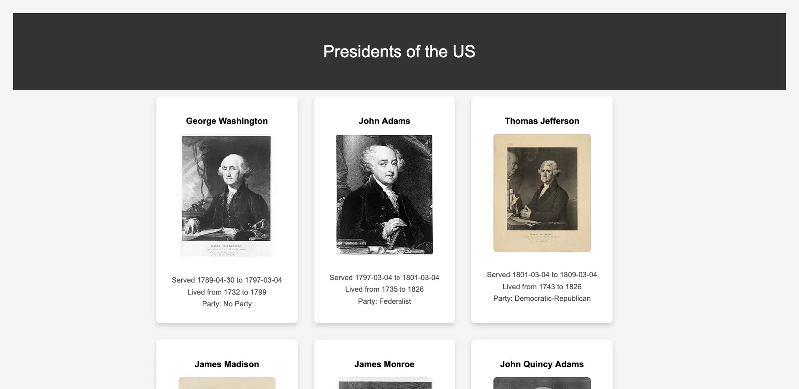
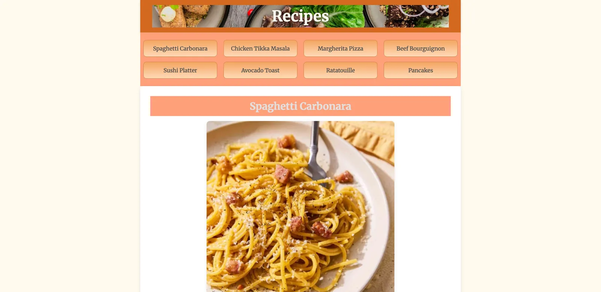

Learning CSS and JavaScript in DWDD 1720
Introduction
I started learning CSS in the same class where I started learning HTML (DWDD 1600), but I didn't get into the nitty-gritty of it until DWDD 1720. That class was where I really started diving into CSS and JavaScript, and making JavaScript-based games in my projects, with CSS helping them work.
I furthered my understanding of CSS, reached a very basic understanding of JavaScript, and developed the skills I needed to succeed in the class.
What happened
The first assignment in the class was to create a table of contents page for the rest of the assignments in the course. This was also an assignment in DWDD 1600, but in DWDD 1720 it was more intensive and more design-based. Since we already had the knowledge we'd built up in 1600, we were able to create this basic table of contents with some CSS throughout it.
After that, we built a small website that used JavaScript to count how many people boarded a train. It was simple JavaScript, but it taught us how to build basic functions into sites.
The next assignment was a practice portfolio website: a portfolio for our "graduation" that we could link our assignments to. Our real portfolio websites will be much more intricate than this, but it still helped us get a grasp on what we were in for.
After that we worked on a JavaScript blackjack game. The site gave us a random number each time we clicked a button, and after a couple of clicks, if the total met a certain range, we won. This assignment was very interesting.

Conclusion
Because of this class, I learned a lot about JavaScript and CSS, and more about HTML. I learned how to embed images from libraries on the web and attach them through a .js file.

Presidents project Final: Recipes project Original assignment (PDF)